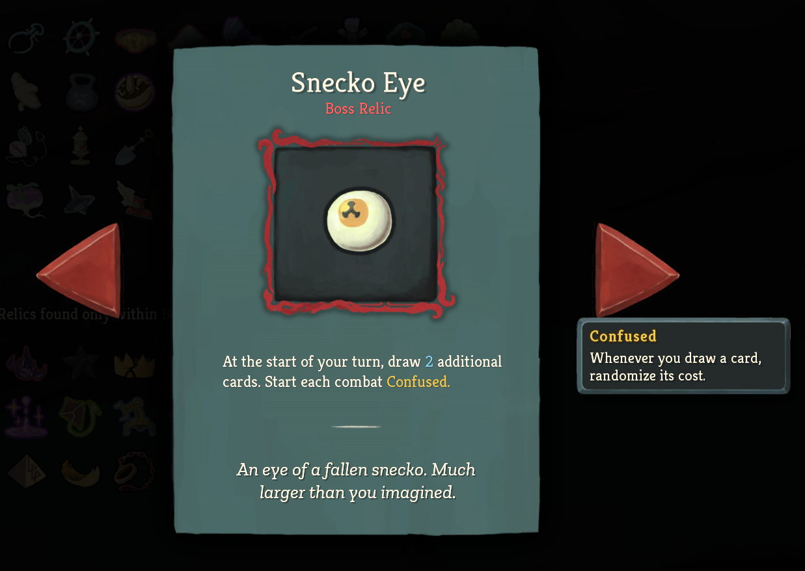
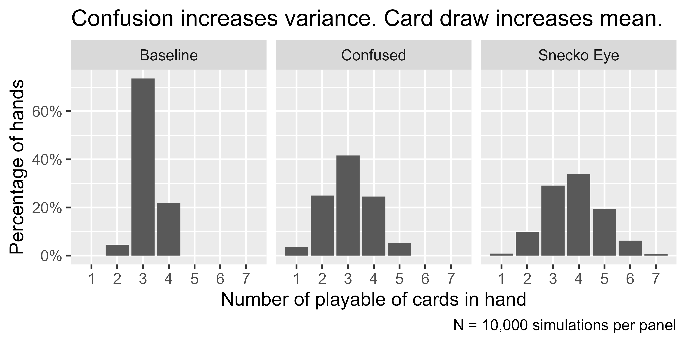
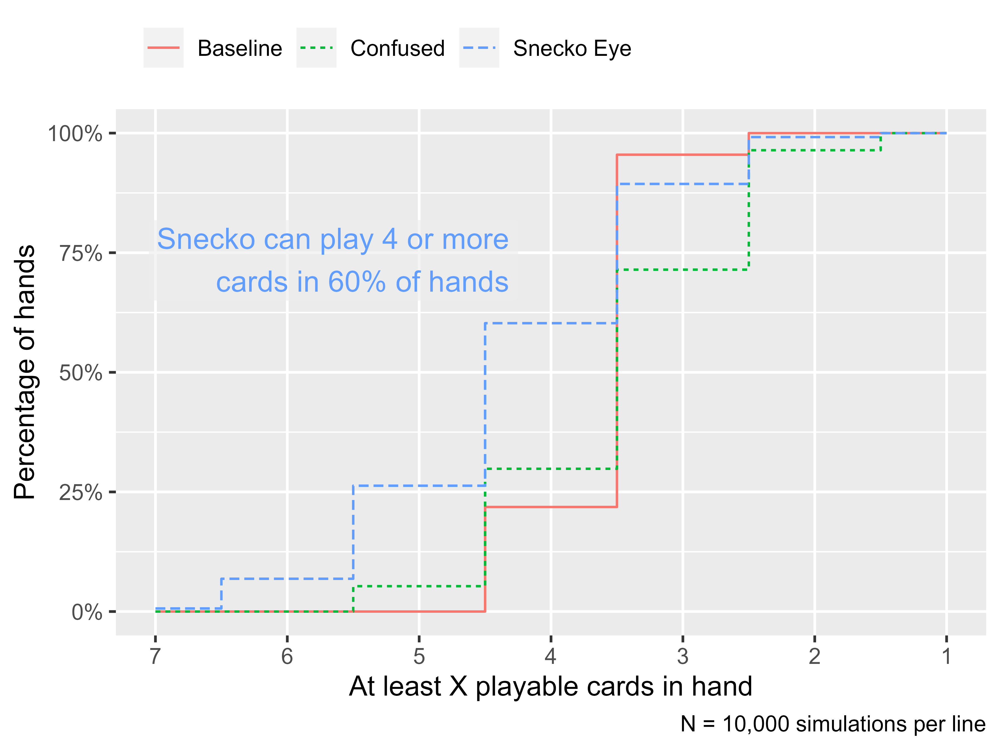
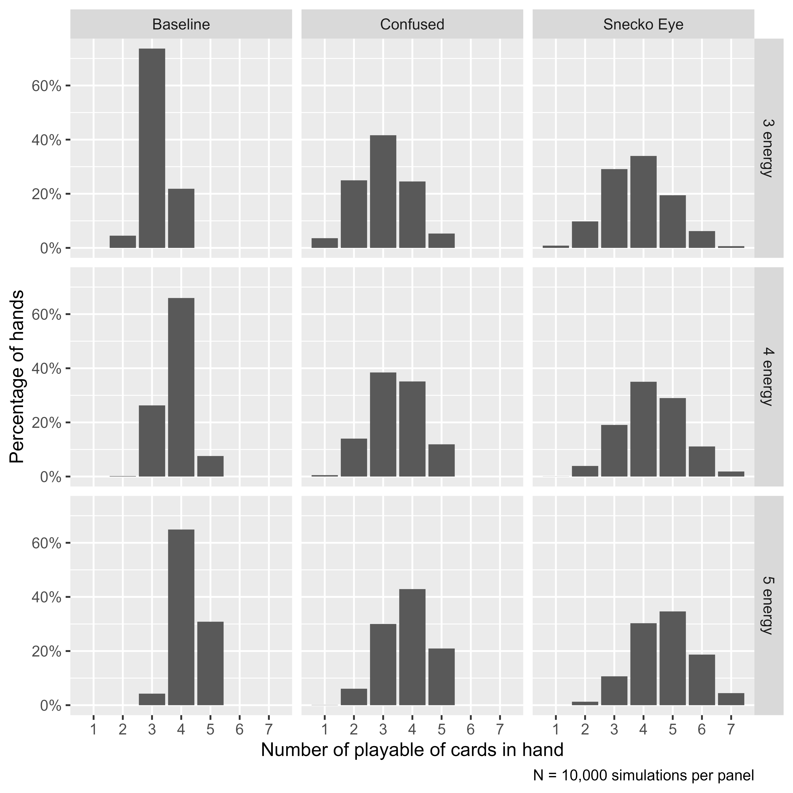
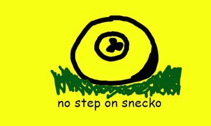

In a previous post, I used simulations to estimate how long it would take to collect the unique Unowns in Pokemon Go! The message of the post was that we can use simulations to solve problems when the analytic solution is not clear or obvious. The current post is an another example of using simulations to understand a weird counting/probability problem.
Over the past strange year, I sunk a lot of time into Slay the Spire, a rogue-like deck-building game. You have to escape from a 50-floor spire, fighting monsters by playing cards. The cards let you attack, defend, apply buffs and debuffs, draw cards, etc. You start each turn with a given amount of energy, the cards cost energy (with more powerful effects costing more energy), so you need to plan out how to play your turns in order to defeat the monsters. You receive more cards from winning battles and can receive special relics that will make you stronger or change how your deck plays.
That’s the basic gist of the game. The sublime part comes when the cards and relics start synergistically empowering each other and comboing off each other. You might get the curse Pain which drains you of 1 health every time you play a card. (This is bad.) But then you find a Rupture which increases your strength every time you take damage from a card. Then you get Runic Cube which draws you an extra card every time you take damage. Finally, you find Reaper which converts damage into health. So you now have this card-drawing, strength-building, self-sustaining engine that makes you unstoppable. (This particular scenario unfolded in a recent game by the streamer Jorbs.)

The exercise today: simulate the maximum number of cards we can play per turn for 3 energy under normal circumstances and when a game-warping relic (Snecko Eye) is active.
A baseline deck
Let’s consider a setup as a baseline for comparison.
- We have 3 energy to play cards per turn.
- We draw 5 cards per turn.
- Our deck has 16 cards: 1 card costs 0 energy, 12 cost 1 energy, 3 cost 2 energy, and 1 costs 3 energy.
(I made up this deck for this example.)
If we build our deck, we can find the average cost of our cards and simulate some draws by sample()-ing without replacement.
Suppose that we don’t really care about what the cards do. We want to maximize the number of cards that we play per turn. We just want to know: How many cards per turn can I expect to play on average?
Let’s write a function that counts the number of playable cards in a hand given a certain energy budget. The basic logic is that we sort the card costs, compute the cumulative sum (cumulative energy spent on each card), and count how many sums (played cards) are less than or equal to the energy limit.
# A worked example
energy <- 3
hand <- sample(costs, size = 5)
hand
#> [1] 3 1 0 1 1
sort(hand)
#> [1] 0 1 1 1 3
cumsum(sort(hand))
#> [1] 0 1 2 3 6
cumsum(sort(hand)) <= energy
#> [1] TRUE TRUE TRUE TRUE FALSE
sum(cumsum(sort(hand)) <= energy)
#> [1] 4
count_max_playable <- function(hand, energy) {
sum(cumsum(sort(hand)) <= energy)
}
count_max_playable(hand, energy)
#> [1] 4Now, we can do this procedure on several thousand hands and run summary statistics on the number of playable cards in each hand.
simulated_cards_played <- replicate(
10000,
costs %>%
sample(size = 5) %>%
count_max_playable(energy = 3)
)
summary(simulated_cards_played)
#> Min. 1st Qu. Median Mean 3rd Qu. Max.
#> 2.000 3.000 3.000 3.173 3.000 4.000
table(simulated_cards_played)
#> simulated_cards_played
#> 2 3 4
#> 451 7364 2185
proportions(table(simulated_cards_played))
#> simulated_cards_played
#> 2 3 4
#> 0.0451 0.7364 0.2185The expected number of playable cards per hand is 3.2. The dreaded (1, 2, 2, 2, 3) hand appears about 4.5% of the time, but the one 0-cost card in our deck lets us play a fourth card about 21.8% of the time.
Enter the Snecko

Let’s suppose we obtain the mighty Snecko Eye relic. It says “Draw 2 additional cards each turn. Start each combat Confused.” Confused is a debuff that randomizes the costs of cards when we draw them. So now our setup is the following:
- We have 3 energy to play cards per turn.
- We draw 7 cards per turn.
- Our deck has 16 cards: the costs are random integers between 0 and 3 energy.
The average energy cost of any given card in our deck is now mean(0:3) = 1.5. In the baseline example, the average energy cost was 1.24. (One obvious strategy with Snecko Eye is to maximize the costs of new cards—that is, try to get as many as 2s and 3s as possible because the new expected cost is less than the original cost. But let’s ignore that dimension of gameplay for now.)
So here’s the puzzle, how many cards per turn can I play with Snecko Eye? We can run the same simulations as above.
snecko_costs <- 0:3
simulated_snecko_cards_played <- replicate(
10000,
snecko_costs %>%
sample(size = 7, replace = TRUE) %>%
count_max_playable(energy = 3)
)
summary(simulated_snecko_cards_played)
#> Min. 1st Qu. Median Mean 3rd Qu. Max.
#> 1.000 3.000 4.000 3.826 5.000 7.000
table(simulated_snecko_cards_played)
#> simulated_snecko_cards_played
#> 1 2 3 4 5 6 7
#> 83 979 2911 3397 1945 621 64
proportions(table(simulated_snecko_cards_played))
#> simulated_snecko_cards_played
#> 1 2 3 4 5 6 7
#> 0.0083 0.0979 0.2911 0.3397 0.1945 0.0621 0.0064Let us note that the dream—playing 7 cards in one turn—happened about 0.6% of the time and the nightmare—drawing only 2-cost and 3-cost cards—happened 0.8% of the time. Recall that in the baseline setup, we got to play 4 cards 21.8% of the time. With Snecko Eye, we can play 4 or more cards per turn 60.3% of the time. Snecko Eye simply lets us play more cards on average.
For this problem where there are 4^7 = 16384 combinations, a brute-force enumeration is possible. The proportions from the counting from the full set are within .005 (half a percentage point) of the proportions from simulating 10,000 hands.
Where does this power come from?
Is the magic of Snecko Eye the card draw or the cost randomization? Well, let’s suppose that we are just confused and we draw only 5 cards (as in the baseline example).
simulated_confused_cards_played <- replicate(
10000,
snecko_costs %>%
sample(size = 5, replace = TRUE) %>%
count_max_playable(energy = 3)
)
summary(simulated_confused_cards_played)
#> Min. 1st Qu. Median Mean 3rd Qu. Max.
#> 1.00 2.00 3.00 3.03 4.00 5.00
table(simulated_confused_cards_played)
#> simulated_confused_cards_played
#> 1 2 3 4 5
#> 358 2496 4162 2454 530
proportions(table(simulated_confused_cards_played))
#> simulated_confused_cards_played
#> 1 2 3 4 5
#> 0.0358 0.2496 0.4162 0.2454 0.0530Here the average number of cards played is 3.0 and we play 4–5 cards per turn 29.8% of the time. This percentage is greater than the baseline case (21.8%), but the nightmare case is worse (1 card), occurring 3.6% of the time.
We can plot the three simulations side by side and observe the distributions. First, we package them together into a single dataframe suitable for plotting and plot a bar chart.
library(ggplot2)
sim1 <- data.frame(
set = "Baseline",
energy = 3,
cards = simulated_cards_played
)
sim2 <- data.frame(
set = "Snecko Eye",
energy = 3,
cards = simulated_snecko_cards_played
)
sim3 <- data.frame(
set = "Confused",
energy = 3,
cards = simulated_confused_cards_played
)
sims <- rbind(sim1, sim2, sim3)
ggplot(sims) +
aes(x = cards) +
geom_bar(aes(y = stat(prop))) +
facet_wrap("set") +
scale_x_continuous(breaks = 1:7, minor_breaks = NULL) +
scale_y_continuous(labels = scales::label_percent()) +
labs(
title = "Confusion increases variance. Card draw increases mean.",
x = "Number of playable of cards in hand",
y = "Percentage of hands",
caption = "N = 10,000 simulations per panel"
) +
theme_grey(base_size = 12)
#> Warning: `stat(prop)` was deprecated in ggplot2 3.4.0.
#> ℹ Please use `after_stat(prop)` instead.
Both the confused and the Snecko Eye panels have increased variance. The bars are shorter and more spread out, compared to the Baseline panel. The peak (the mode) shifts from 3 to 4 cards from the Confused and Snecko Eye panels.
A more statistically niche technique would be plotting the empirical cumulative distribution function. Imagine taking the bars from the previous plot and summing them along the x axis so that they are cumulative percentages. These percentages would tell you about the percentage of cases less than or equal to that given value. In the plot below, I do that procedure on reversed x axis, so we can look at what proportion of simulations had at least 4 cards played. (I chose the reversed x axis to visually convey the advantage of Snecko Eye.)
library(dplyr)
props <- sims %>%
count(set, cards) %>%
# Fill in rows that would be n = 0
tidyr::complete(set, cards = 1:7, fill = list(n = 0)) %>%
# Compute ECDF in reverse order (dtarting at 7 cards)
arrange(set, desc(cards)) %>%
group_by(set) %>%
mutate(
proportion = n / sum(n),
ecdf = cumsum(proportion)
) %>%
ungroup()
ggplot(props) +
aes(x = cards) +
geom_step(
aes(y = ecdf , color = set, linetype = set),
direction = "mid"
) +
geom_label(
aes(color = set, y = ecdf),
label = "Snecko can play 4 or more\ncards in 60% of hands",
data = . %>% filter(set == "Snecko Eye", cards == 4),
y = .65,
nudge_x = -.25,
hjust = 1.0,
vjust = 0,
fill = scales::alpha("grey93", .6),
label.size = 0,
show.legend = FALSE,
size = 4.5,
) +
scale_x_reverse(breaks = 7:0, minor_breaks = NULL) +
scale_y_continuous(labels = scales::label_percent()) +
labs(
x = "At least X playable cards in hand",
y = "Percentage of hands",
caption = "N = 10,000 simulations per line",
color = NULL,
linetype = NULL
) +
theme_grey(base_size = 12) +
theme(
legend.position = "top",
legend.justification = "left"
)
The advantage at higher energy
During a run through the game, we can obtain up to two relics (along with Snecko Eye) that increase our energy per turn by 1 unit. Let’s see how these new energy budgets affect the simulations.
First, we run the simulations. We put the main code into functions so that we can build the dataframes more easily.
simulate_decko <- function(n, energy, costs, size = 5) {
replicate(
n,
sample(costs, size = size) %>%
count_max_playable(energy = energy)
)
}
simulate_snecko <- function(n, energy, size = 7) {
snecko_costs <- 0:3
replicate(
n,
sample(snecko_costs, size = size, replace = TRUE) %>%
count_max_playable(energy = energy)
)
}
additional_sims <- rbind(
# include old results
sims,
data.frame(
set = "Baseline",
energy = 4,
cards = simulate_decko(10000, 4, costs)
),
data.frame(
set = "Baseline",
energy = 5,
cards = simulate_decko(10000, 5, costs)
),
data.frame(
set = "Snecko Eye",
energy = 4,
cards = simulate_snecko(10000, 4)
),
data.frame(
set = "Snecko Eye",
energy = 5,
cards = simulate_snecko(10000, 5)
),
data.frame(
set = "Confused",
energy = 4,
cards = simulate_snecko(10000, 4, size = 5)
),
data.frame(
set = "Confused",
energy = 5,
cards = simulate_snecko(10000, 5, size = 5)
)
)We can make the same kind of plot as before. We see that the distribution with the highest mode (the peak that lands on the highest number of cards) in each row is Snecko Eye.
ggplot(additional_sims %>% mutate(energy = paste0(energy, " energy"))) +
aes(x = cards) +
geom_bar(aes(y = stat(prop))) +
facet_grid(energy ~ set) +
scale_x_continuous(breaks = 1:7, minor_breaks = NULL) +
scale_y_continuous(labels = scales::label_percent()) +
labs(
x = "Number of playable of cards in hand",
y = "Percentage of hands",
caption = "N = 10,000 simulations per panel"
) +
theme_grey(base_size = 12)
One limitation of the other two non-Snecko sets becomes more obvious in the 5-energy row: They can never play 6 or 7 cards in a turn. They don’t draw that many cards. Their distributions are cut off at 5 cards.
If we look at numerical summaries, we get some sense that the benefit of Snecko diminishes as energy increases but we won’t explore this trend in any detail.
additional_sims %>%
group_by(set, energy) %>%
summarise(
mean = mean(cards),
sd = sd(cards),
median = median(cards),
.groups = "drop"
) %>%
tidyr::pivot_longer(cols = c(mean, sd, median)) %>%
tidyr::pivot_wider(
names_from = energy,
values_from = value,
names_prefix = "Energy "
) %>%
rename(Set = set, Statistic = name) %>%
arrange(Statistic, Set) %>%
knitr::kable(digits = 2)| Set | Statistic | Energy 3 | Energy 4 | Energy 5 |
|---|---|---|---|---|
| Baseline | mean | 3.17 | 3.81 | 4.27 |
| Confused | mean | 3.03 | 3.44 | 3.79 |
| Snecko Eye | mean | 3.83 | 4.30 | 4.72 |
| Baseline | median | 3.00 | 4.00 | 4.00 |
| Confused | median | 3.00 | 3.00 | 4.00 |
| Snecko Eye | median | 4.00 | 4.00 | 5.00 |
| Baseline | sd | 0.48 | 0.56 | 0.53 |
| Confused | sd | 0.92 | 0.89 | 0.84 |
| Snecko Eye | sd | 1.11 | 1.08 | 1.06 |
You should probably play Snecko

We could go on and on with the simulations. Suppose you are dying and you are desperate need of the Apparition on the top of your deck. How many cards can you play after you are forced to play that card? Or suppose that you are, rightly, playing on Ascension 20 and one of the cards is an unplayable curse. Does that change anything?
The point here is that we used simulations to visualize how randomization increased the variance of playable cards but the extra cards shifted the mode of the distribution upwards. You can play more cards with Snecko Eye because you simply have more cards you can play per turn.